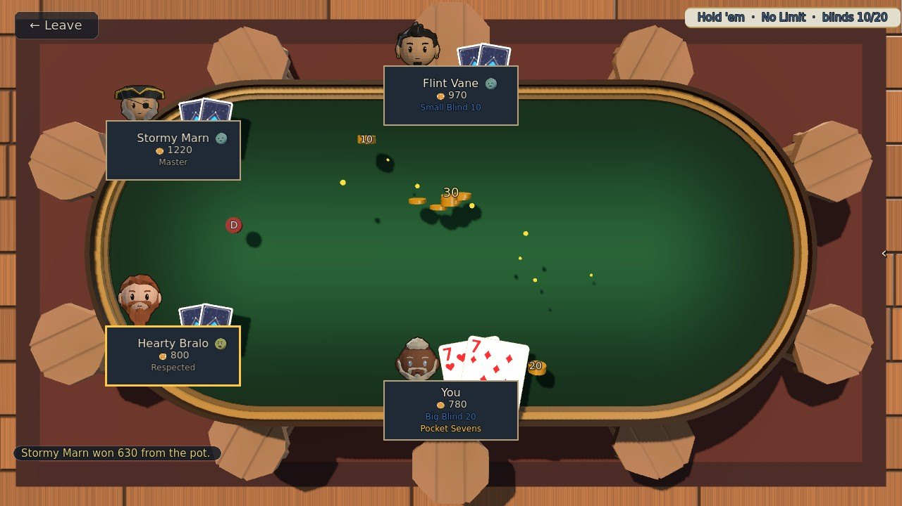
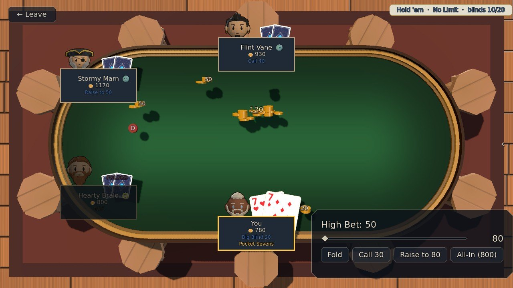
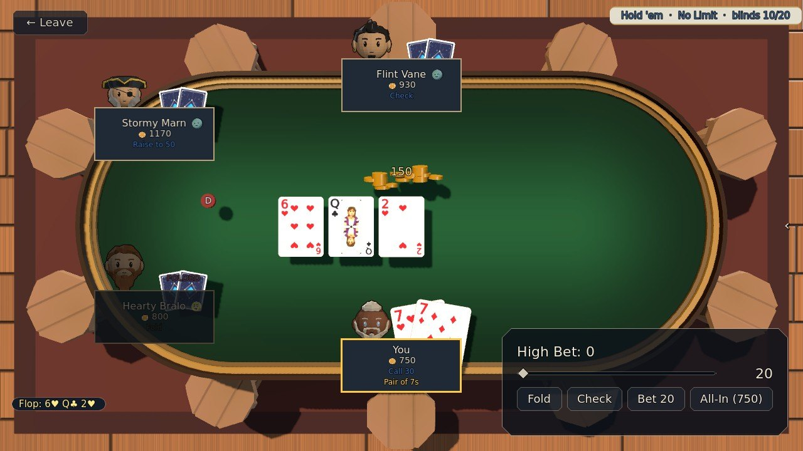
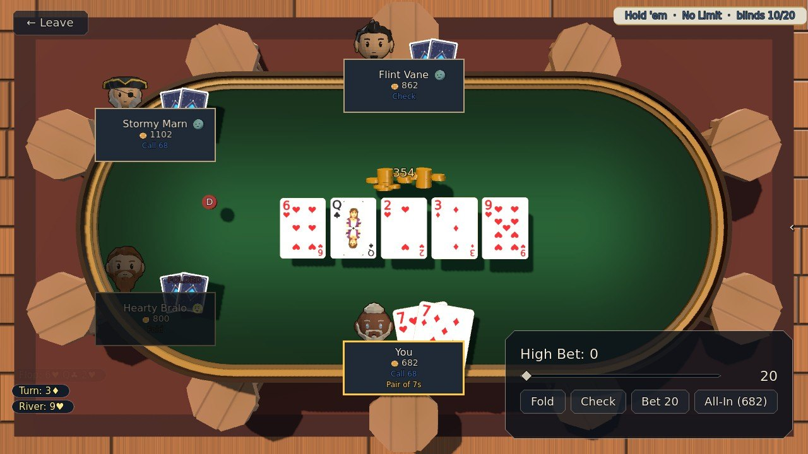
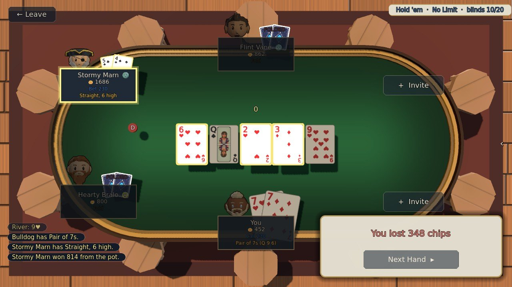

Poker
Texas Hold'em at the tavern table, for the islanders' own gold. Your chips are gold, one for one.
Step by step
-

1Your two cards2Your seat1Your two cards2Your seat Step 1Your two cards
Your chips are gold, one for one: you buy in when you sit down. Every seat is dealt two cards; yours are turned up for you alone, and the game names what you hold under your seat (here, pocket sevens).
-

1Your move1Your move Step 2Act on your turn
When it's your turn your seat lights up and the panel comes up: Fold, Check or Call, Bet or Raise (slide the amount first), or go All-In. High Bet is the bet on the table you have to meet.
-

1The flop1The flop Step 3The flop
Three cards are dealt face up in the middle for everyone to use. A fourth (the turn) and a fifth (the river) follow, with a round of betting after each. With no bet to meet, you can check.
-

1Five on the table2Your hand, named1Five on the table2Your hand, named Step 4Make the best five
Your hand is the best five cards out of your two and the five in the middle. The game names it under your seat as the cards come: a pair of sevens here.
-

1The best hand2Your result1The best hand2Your result Step 5Showdown
If more than one player is still in after the river, the hands are shown and the best five takes the pot; the cards that made it light up. Your chips are gold, so chips lost are gold lost. When you Leave you cash out whatever is still in front of you, and a win is only ever as big as what the others have on them.
The rules, as the game tells them
- Click action buttons (Fold / Check / Call / Bet / Raise / All-In)
- Slide the bet amount on raises
- Best 5-card hand from your 2 hole cards + 5 community cards wins
- Your chips ARE gold (1:1) — buy in, then Cash Out when you Leave
- You cash out the chips still in front of you, so chips lost are gold lost
- A WIN is only ever as big as the money the others still have on them — beat a table of paupers and there is little there to take
- Bust and you walk away with nothing
Word for word from the game: in play the same text sits behind the ? on the board, so this page cannot drift from it.